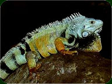
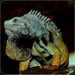

De Groene Leguaan is een vrij forse hagedis. Veelal worden de volwassen mannelijke exemplaren tussen 120 en 140 cm lang en de volwassen vrouwelijke dieren tussen 90 en 120 cm. Het grootste, tot nu toe gemeten exemplaar schijnt 230 cm lang te zijn geweest en woog 10,5 kg.
Groene leguanen leven in bosachtige gebieden, en als je goed naar ze kijkt, dan zie je dat deze diersoort perfect is aangepast aan het leven in bomen en struiken. Hun kleur zorgt voor camouflage, met de sterke poten en scherpe nagels kunnen ze uitstekend klimmen en hun lange staart gebruiken ze o.a. als roer wanneer ze van tak naar tak springen. Ook kunnen ze hiermee vervaarlijke klappen uitdelen als verdediging. De volwassen dieren leven gewoonlijk in de hoger gelegen delen van de bomen, soms wel tot in de kruin op 20 meter of hoger. De jonge dieren vindt men meestal in de wat lagere delen. Ook houden Groene Leguanen zich graag op langs watertjes en rivieren. Bij gevaar schromen ze niet om hier met een flinke duik in te springen. Groene leguanen hebben een sterk aanpassingsvermogen en zijn aldus ook aan te treffen in de buurt van menselijke nederzettingen, evenals in de droge binnen zijn verspreidingsgebied. In deze laatstgenoemde, voedselarme streken blijven de volwassen dieren veelal wat kleiner.
Naast allerlei andere predatoren, zoals slangen, katachtigen en roofvogels, is de mens de grootste vijand van de Groene Leguaan. Allereerst worden grote delen van hun leefgebied gekapt voor het hout. Daarnaast worden ze in de meeste delen van hun verspreidingsgebied met graagte gegeten, zowel de dieren als hun eieren. Schijnbaar zijn het, naast mooie dieren ook lekkere dieren. Ook worden er nog steeds veel, vooral jonge, exemplaren gevangen om verkocht te worden als huisdier. Veel van deze dieren zijn al dood of bijna dood als ze bij de klant arriveren; dit komt vooral door de slechte manier van verpakken en het tijdens de opslag slecht verzorgen van de dieren.
In het meest noordelijke deel van hun verspreidingsgebied komt een variëteit voor met hoorntjes op de neus. (Deze worden soms abusievelijk Iguana rhinolopha of Iguana iguana rhinolopha genoemd. Het gaat hier niet om een aparte soort of ondersoort, want “gehoornde”exemplaren schijnen hier en daar in het gehele verspreidingsgebied voor te komen.)

De familie Iguanidae, onderfamilie Iguaninae kent, naast
de soort Iguana iguana, nog één andere soort, namelijk
de Antillenleguaan - Iguana delicatissima
